IB Diploma · Grade 11
42/42
Grade 11 final score
Awards, publications, and academic selections.
42/42
Grade 11 final score
10A*
A* in all ten subjects
Top in the World · Mathematics1550
790 Mathematics · 760 Reading & Writing
Jaipur, India · Class of 2027
Higher Level: Computer Science, Mathematics AA, Physics, and Chemistry. Standard Level: English A Language & Literature and French B.
Résumé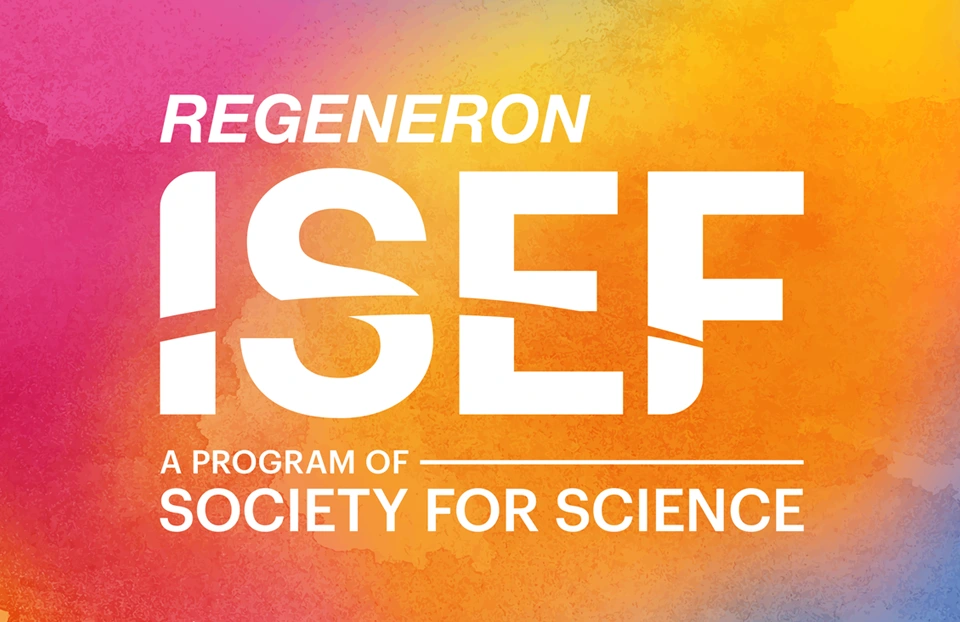
Third Grand Award
Awarded for EcoFog, a passive composite fog-harvesting mesh.
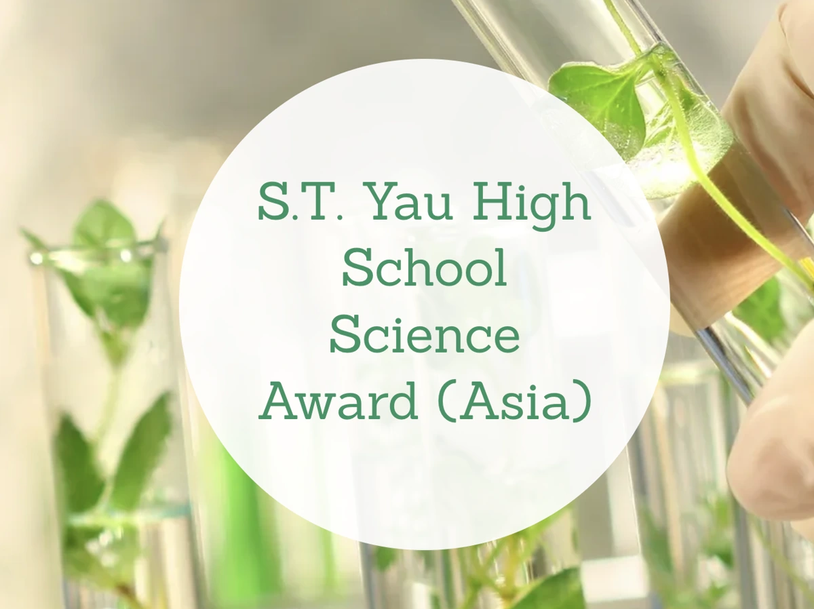
Asia Finalist · Mathematics & Physics
Top 12 in Mathematics and Top 10 in Physics; Chemistry semifinalist.
Admitted to M&TSI
Accepted to the programme; unable to attend because an administrative backlog delayed F-1 visa issuance until after the programme began.
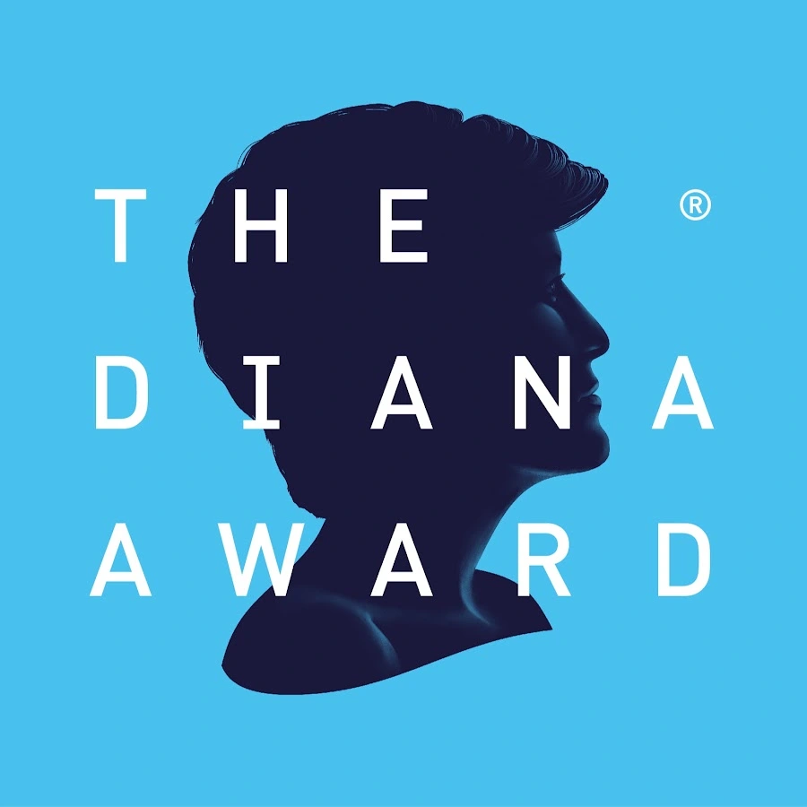
2026 recipient
Recognized for social action through AmbuGo and PredictX.
Top 30 globally
Recognized for initiatives expanding education access in tribal communities.
Top in the World · IGCSE Mathematics
Highest mark worldwide in IGCSE Mathematics (Without Coursework), June 2025; 100/100.
Asia Runner-Up · EcoFog
Selected as one of the top two teams from Asia for the regional interview stage.
National Water Champion Award
Recognized for Team EcoFog under Stockholm Junior Water Prize India 3.0.
Gold Award
British Science Association research award.
Finalist · EcoFog
Selected for the project on biodegradable nanostructured fog-harvesting materials.
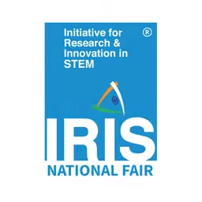
Gold Medal · EcoFog
Recognition for the fog-harvesting research project.
Best in Country · 2024
National award for a scientific investigation.
Top 100 · 35,000+ entries
Selected for FormFit.
$10,000 Award · Innovation
Entrepreneurship & Innovation track; only recipient from India.

Emerging Innovator · Top 100 Global Honoree
University of Delaware entrepreneurship recognition.
Conrad Innovator · 2025–26
Recognized for Project Niraksha.
Honorable Mention · 2026
Recognized by the National Geographic Society and Allen Family Philanthropies.
Honorable Mention · AERIS
Selected to the Young Voices Council for 2026–27.
University of Rochester
Honorary recognition for science achievement.
Selected from a cohort of 290
Jayshree Periwal International School.
First-author research publication
Development of a Speech-to-Text Emotion and Speaker Recognition System for Individuals with Hearing Impairments.
Youth Parliamentarian · 2026
Contributed to discussions on finance and regulation of scientific innovation.

Visionaries Empowering India’s Next Decade
Recognized as the youngest entrepreneur in the feature, as listed in the résumé.
Media coverage
Articles and media references are collected in the media archive.
Academic distinctions, Student of the Year, Versatile Genius, and recognition for AmbuGo. Open an individual photograph to read the trophy.
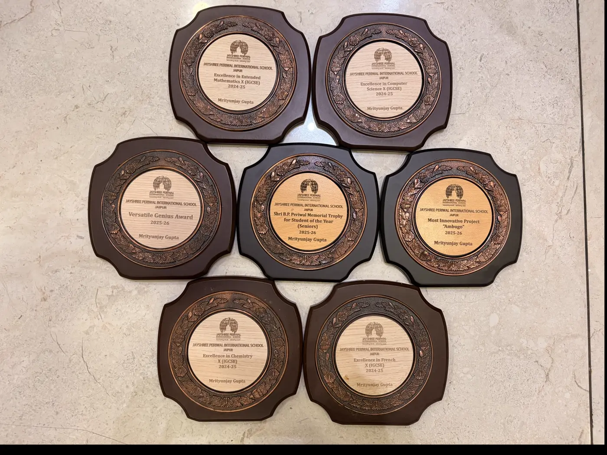
↗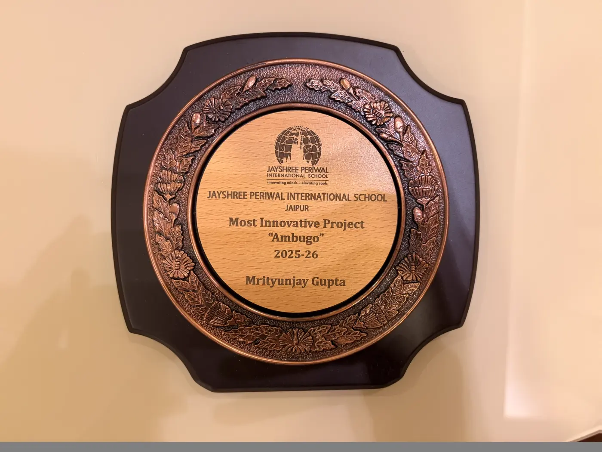
↗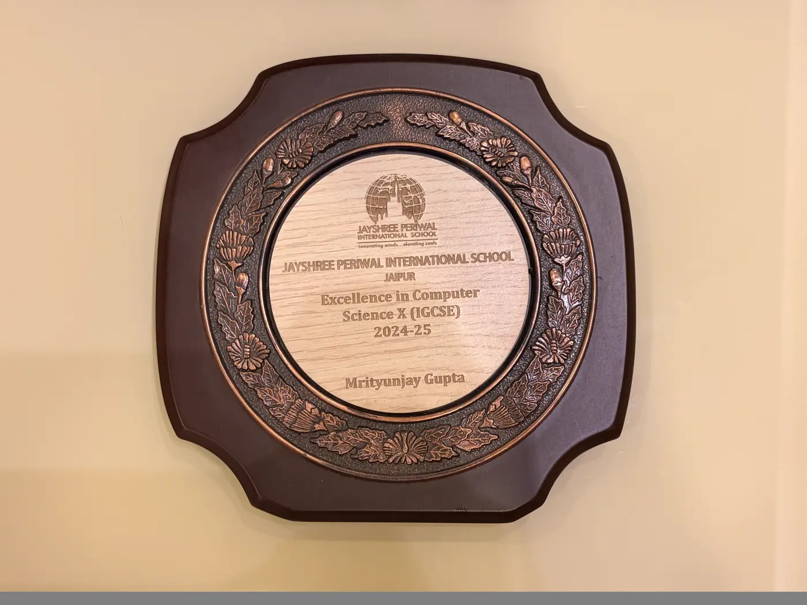
↗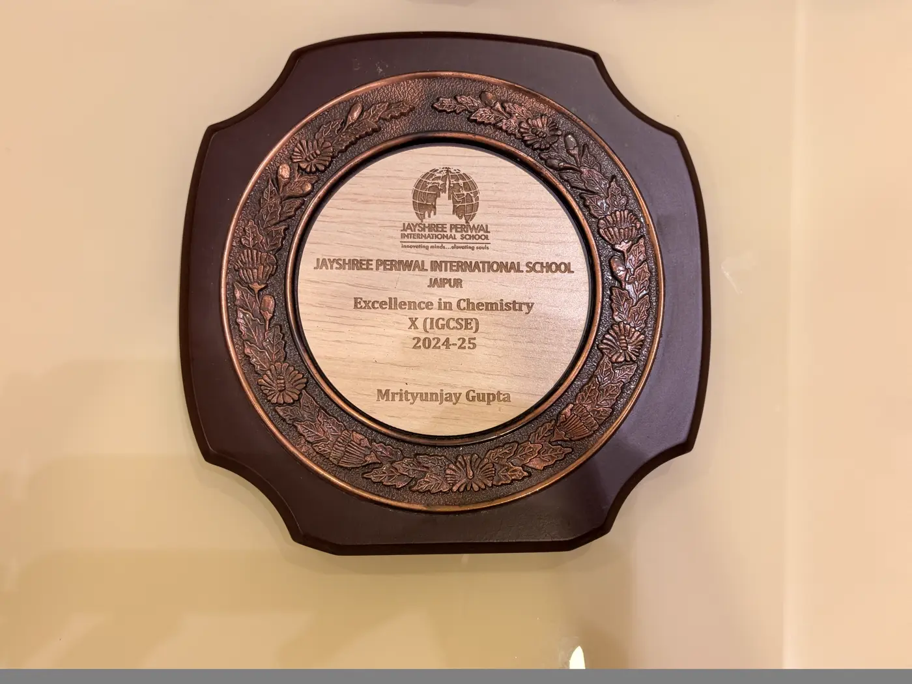
↗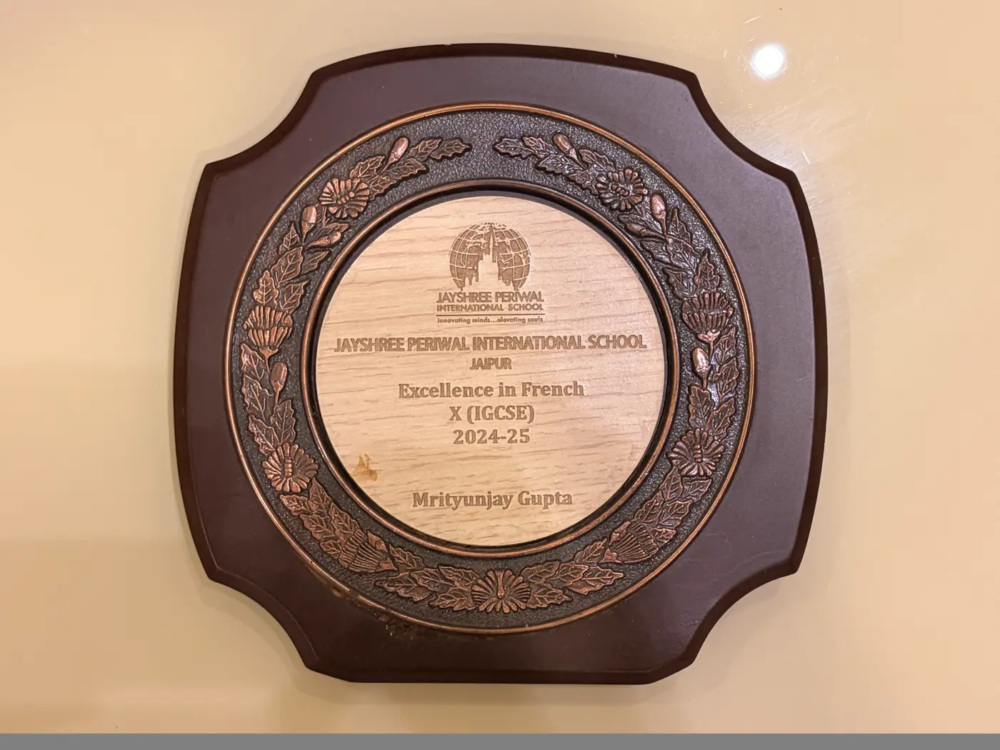
↗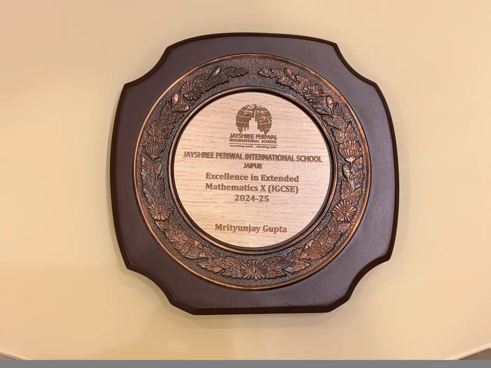
↗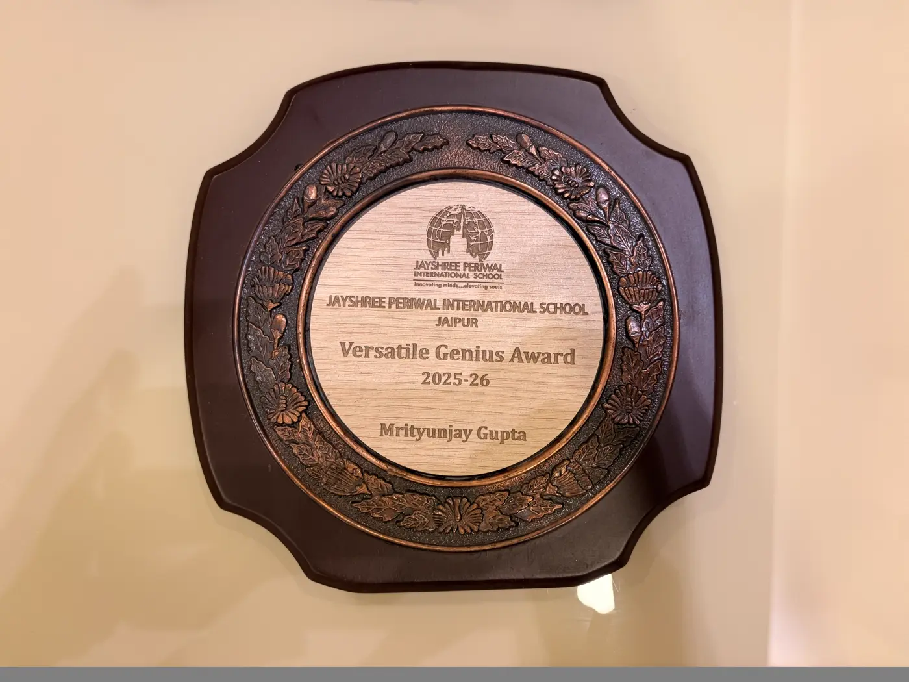
↗